16-825 Assignment 5: Point Cloud Classification and Segmentation
Farnaz Alam Ahmed
Q1. Classification Model
Model. A vanilla PointNet (no T-Nets). A shared per-point MLP
(Conv1d with kernel size 1: 3→64→64→64→128→1024, each followed by BatchNorm and ReLU)
maps every point to a 1024-D feature. A max-pool over the points gives one order-invariant global feature per object,
and an MLP head (1024→512→256→3, BatchNorm, ReLU, dropout 0.3) outputs the class scores.
Trained for 50 epochs with Adam (lr 0.001, batch 32) on all 10,000 points per object.
Random test samples
Five random test objects (fixed seed) with their predicted class. All five are classified correctly.
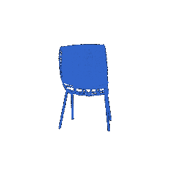
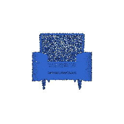
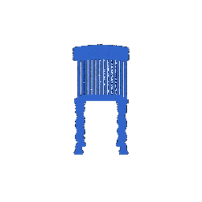
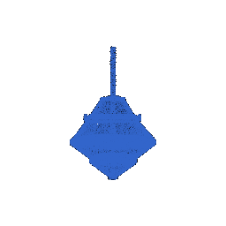
Failure cases
| True class | Misclassified | Predicted as |
|---|---|---|
| Chair | 0 / 617 | – |
| Vase | 9 / 102 | lamp ×7, chair ×2 |
| Lamp | 18 / 234 | vase ×17, chair ×1 |
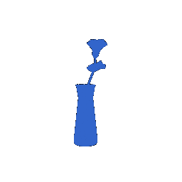
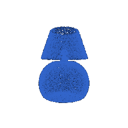
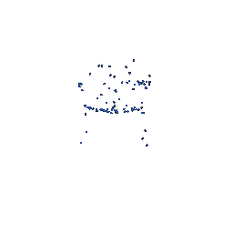
Interpretation.
- Vase → lamp (#619): this vase holds flowers. The long thin stem with a bloom on top looks exactly like a lamp's pole and shade, and the narrow vase body resembles a lamp base. The model detects "thin vertical rod with something on top", which is a strong lamp cue.
- Lamp → vase (#726): this lamp has a large, round, bulbous base that makes up most of its points, with only a small shade on top. The global max-pooled feature is dominated by the round-body pattern typical of vases. Most lamp errors (17 of 18) are of this kind.
- Chair: no chair was misclassified at full resolution. Chairs are the largest class (617 of 953 test objects) and have a distinctive structure (seat, back, legs). To still show a chair failure, #35 comes from the Q3 run with only 100 points: with so few points, the thin legs and the tall back are barely sampled, and the remaining sparse vertical structure looks like a lamp.
Q2. Segmentation Model
Model. PointNet segmentation network. A local MLP (3→64→64) gives a 64-D per-point feature. A second MLP (64→64→128→1024) followed by a max-pool gives a 1024-D global feature for each chair. The global feature is copied to every point and concatenated with that point's local feature (64 + 1024 = 1088), and a per-point head (1088→512→256→128→6) outputs scores for the 6 part classes. Trained for 30 epochs (Adam, lr 0.001, batch 32) on an AWS g5.xlarge GPU.
Colours: back seat legs arms part 1 part 0 (white, invisible on the white background)
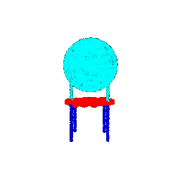
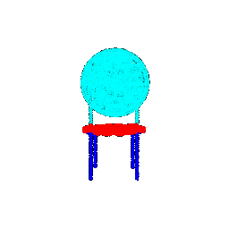
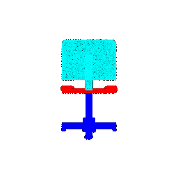
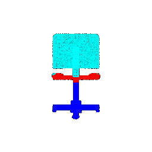
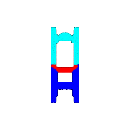
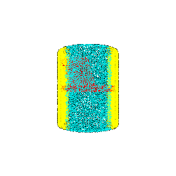
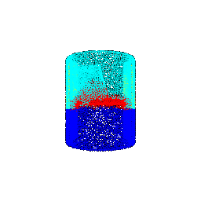
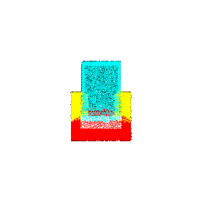
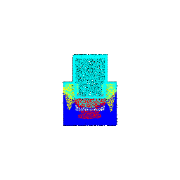
Interpretation. The model segments ordinary chairs almost perfectly (>99% on #471 and #434): thin, clearly separated legs, a flat seat and a distinct back, which is the most common shape in the training data. On a typical chair (#0, 91.8%), the errors are concentrated at the boundaries between parts, e.g. where the legs meet the seat. The two worst chairs are unusual, legless designs: #351 is a closed tub/barrel chair, and #577 is an upholstered armchair with a solid base. In both, the model labels the entire lower half as legs, whereas the ground truth labels it as seat/back/arms. This shows that PointNet relies heavily on a point's height within the object. Because each point is processed independently and only combined with one global feature, the model cannot see that the bottom of these chairs is a solid surface rather than thin rods.
Q3. Robustness Analysis
Both experiments use the trained Q1 and Q2 models without retraining. Only the test inputs are changed
(--num_points and a new --rot_deg option in eval_cls.py / eval_seg.py).
The bold rows are the Q1/Q2 baseline.
Experiment 1: Number of points per object
Procedure. For each test object, a random subset of N ∈ {10000, 5000, 1000, 500, 100, 50, 10} points is kept (with the matching per-point labels for segmentation), and both models are evaluated on this subset.
| Points per object | Classification acc. | Segmentation acc. |
|---|---|---|
| 10000 (Q1/Q2 baseline) | 97.17% | 87.65% |
| 5000 | 97.17% | 87.80% |
| 1000 | 97.27% | 88.05% |
| 500 | 96.85% | 87.65% |
| 100 | 94.33% | 82.17% |
| 50 | 87.09% | 77.46% |
| 10 | 26.65% | 68.57% |
Classification: the same objects with 10,000 vs 100 points
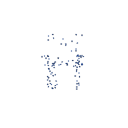
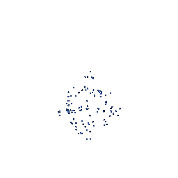
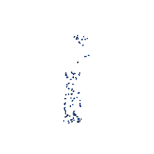
Segmentation: chair #0 as the number of points decreases
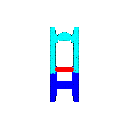
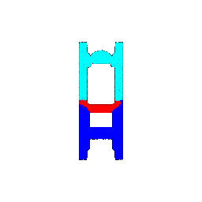
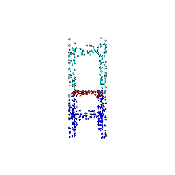
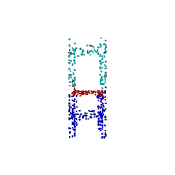
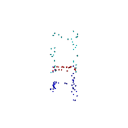
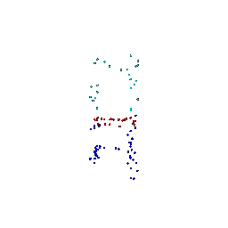
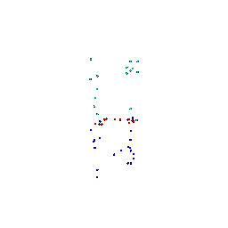
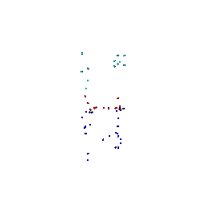
Interpretation. Both models are very robust to sparsity: accuracy is essentially unchanged down to 500 points (5% of the training resolution) and only drops noticeably below 100 points. This is a direct consequence of the max-pool. The global feature is determined by a small set of "critical points" that give the maximum response for each feature, and a random subset of a few hundred points still contains enough of them to describe the shape. At 10 points, the shape is essentially gone: classification collapses to 26.7%, worse than always predicting "chair". Segmentation degrades more gracefully (68.6%), because a point's height alone is already a strong cue for which part it belongs to (legs low, back high).
Experiment 2: Rotating the input
Procedure. Every test point cloud is rotated about the x-axis by θ ∈ {0°, 15°, 30°, 45°, 60°, 90°, 180°}, i.e. tilted forwards/backwards (the y-axis points up in this data). Labels are unchanged. All 10,000 points are used.
| Rotation about x | Classification acc. | Segmentation acc. |
|---|---|---|
| 0° (Q1/Q2 baseline) | 97.17% | 87.65% |
| 15° | 94.54% | 84.88% |
| 30° | 83.42% | 75.24% |
| 45° | 54.04% | 63.05% |
| 60° | 35.68% | 44.31% |
| 90° | 21.20% | 31.36% |
| 180° | 62.43% | 37.39% |
Classification: the same objects at 0°, 45° and 90°
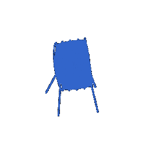
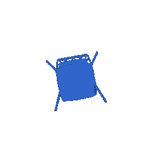
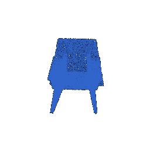
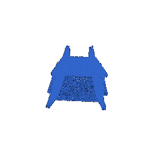
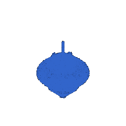
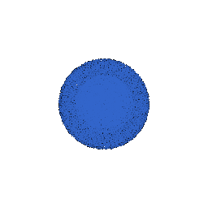
Segmentation: chair #0 under rotation
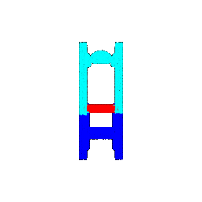
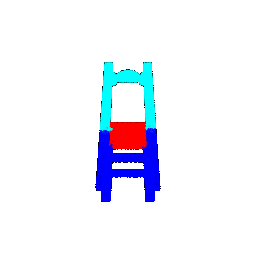
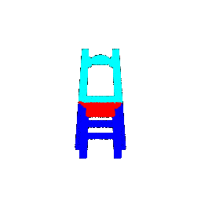
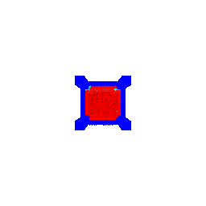
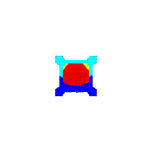
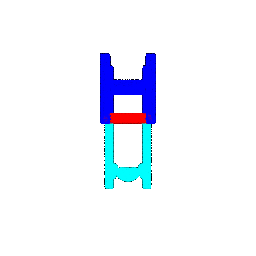
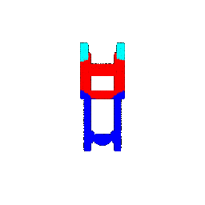
Interpretation. Unlike sparsity, rotation hurts both models badly. Accuracy is still reasonable at 15° but falls quickly beyond 30°, and at 90° the classifier is at 21% and calls almost everything a vase (a chair lying on its back has a compact, box-like outline). Without T-Nets or rotation augmentation, PointNet has no mechanism for rotation invariance. Every training object was upright, so the learned features encode upright patterns such as "horizontal surface at mid-height" (seat) or "thin vertical rod" (lamp pole). 180° is better than 90° for classification (62%) because many vases and lamps are roughly symmetric top-to-bottom, but segmentation stays poor (37%): parts are recognised largely by height, and upside down the legs are at the top. Rotation augmentation during training, or a T-Net that predicts a canonical alignment, would be the natural fixes.
Q4. Bonus: Locality with DGCNN
Model. I implemented DGCNN (Dynamic Graph CNN, Wang et al. 2019). Its building block, EdgeConv, adds the locality that PointNet lacks:
- For each point xi, find its k = 20 nearest neighbours xj.
- Build an edge feature for each neighbour: [xi, xj − xi]. The relative offset describes the local surface (flat, curved, rod-like) around the point.
- Apply a shared MLP to every edge (
Conv2d1×1 + BatchNorm + LeakyReLU), then max-pool over the k neighbours. - Repeat. After the first layer the neighbour graph is rebuilt in feature space (hence "dynamic"), so points that look alike, e.g. the tips of different legs, can become neighbours even when they are far apart.
Classification: 4 EdgeConv layers (64, 64, 128, 256) → concatenate (512) → 1024 → global max-pool → MLP (512, 256, dropout 0.5) → 3 classes. Segmentation: 3 EdgeConv layers (64 each) → concatenated local feature (192) + global max-pooled feature (1024) copied to every point → per-point head (256, 256, 128) → 6 parts. The kNN is implemented in plain PyTorch. Because the pairwise-distance matrix is N×N, both models are trained and tested on a random 1,024 points per object (a new random subset every batch). Trained for 40 epochs (cls) and 50 epochs (seg) with Adam, lr 0.001, batch 32.
Test accuracy compared with Q1 and Q2
| Model | Points | Classification acc. | Segmentation acc. |
|---|---|---|---|
| PointNet (Q1 / Q2) | 10000 | 97.17% | 87.65% |
| PointNet (Q3, same input size as DGCNN) | 1024 | 97.27% | 88.05% |
| DGCNN (Q4) | 1024 | 98.32% | 90.17% |
DGCNN makes 16 classification mistakes instead of 27 (lamp → vase errors drop from 17 to 5) and improves segmentation by about 2 points at the same input size.
Classification visualisations
The same five random objects as Q1 are all still classified correctly. The remaining failures:
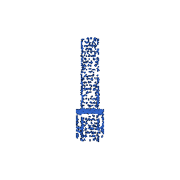
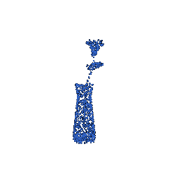
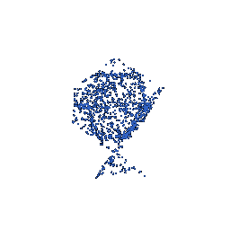
The bulbous-base lamp #726 that PointNet called a vase is now correct, likely because local features can pick up the thin connector between base and shade, which a per-point model cannot see. The flower vase #619 is still wrong, because its stem and bloom really are locally lamp-like. The single chair error (#543) is a very tall, narrow chair that looks like a pole with a small base.
Segmentation: the Q2 chairs, PointNet vs DGCNN (both at 1,024 points)
| Chair | PointNet @1024 | DGCNN @1024 | Change |
|---|---|---|---|
| #0 (typical) | 91.80% | 93.85% | +2.1 |
| #471 (good) | 98.54% | 99.12% | +0.6 |
| #434 (good) | 98.73% | 98.83% | +0.1 |
| #351 (tub chair) | 45.80% | 45.41% | −0.4 |
| #577 (armchair) | 42.97% | 69.04% | +26.1 |
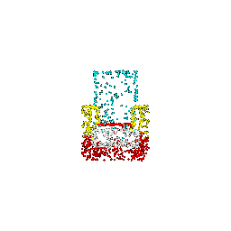
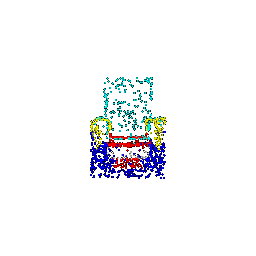
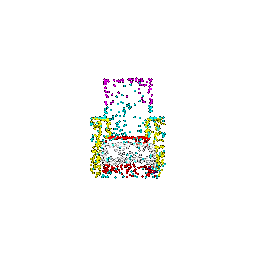
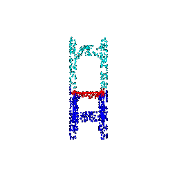
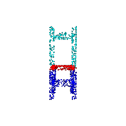
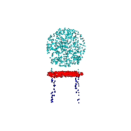
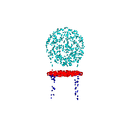
Interpretation. The clearest benefit of locality is on armchair #577. PointNet labelled its whole solid base as legs based on height alone. DGCNN predicts almost no leg points and correctly traces the arms down the sides, because each point's neighbourhood shows a solid surface rather than a thin rod. This raises accuracy from 43% to 69%. On ordinary chairs, DGCNN mainly cleans up the boundaries between parts (+2 points on chair #0). The tub chair #351 is still a failure for both models: its body is one continuous curved wall, so local geometry alone does not reveal where the "seat" ends and the "back" begins, and the bottom half is still predicted as legs. Fixing it likely needs more such shapes in the training data rather than only a different architecture.